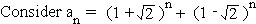
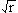

Solution to puzzle 27: 1000th digit
What is the 1000th digit to the right of the decimal point in the decimal representation of (1 + ) 3000 ?

Expanding both terms using the binomial theorem, notice that the odd powers cancel, while the coefficients of even powers are all integers, and therefore an is an integer.
Then, |1 - | < 1, and so (1 - ) n tends to zero as n tends to infinity.
Using logarithms and/or a calculator, we find that 10 -1149 < (1 - ) 3000 < 10 -1148.
Therefore (1 + ) 3000 has 1148 nines to the right of the decimal point, and so the 1000th such digit is a 9.
Remarks
Note that a large odd exponent would generate a string of zeroes rather than nines.
As a generalization, note that (a + b) n + (a - b) n is an integer for any positive integers a, b, and r. (Ignore the trivial case where r is a perfect square.)
Therefore as n tends to infinity, (a + b) n will tend to an integer if |a - b| < 1.
Additional puzzle
Find the first digit before and after the decimal point in ( +  ) 3000.
) 3000.
Source: Inspired by Binet's formula for Lucas numbers